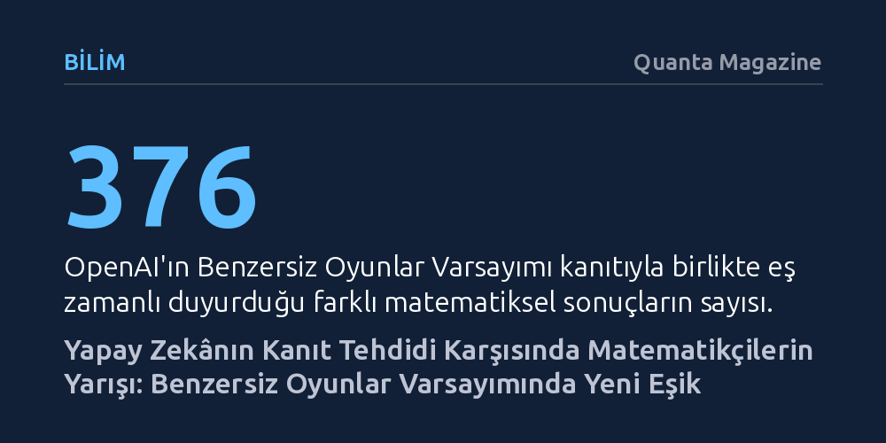

BILIM · Quanta Magazine · 2026-10-07
MIT araştırmacıları, yapay zekânın kanıt duyurusu öncesinde Benzersiz Oyunlar Varsayımı'nın 4'e 1 türevini ispatlayarak hesaplama zorluğunun sınırlarını belirledi. Sonuç, standartlar ne kadar esnetilirse esnetilsin bazı problemlerde yaklaşık çözümlere dahi ulaşmanın imkânsız kaldığını doğruluyor.
Yapay zekânın matematiksel kanıtları hızla çözmeye başladığı bir çağda, insan zihninin rolünü ve bilgisayarların doğası gereği çözmekte zorlanacağı temel sınırları ortaya koyuyor.

11 Eylül 2026 sabahı Massachusetts Teknoloji Enstitüsü'nden (MIT) teorik bilgisayar bilimci Dor Minzer, meslektaşlarından gelen beklenmedik mesajlarla güne başladı. Akışkanlar mekaniğindeki yankı uyandıran başarısıyla matematik dünyasını sarsan OpenAI'ın, bu kez alanın en büyük açık problemlerinden biri olan Benzersiz Oyunlar Varsayımı'nı çözdüğü fısıldanıyordu. Minzer başlangıçta bunu bir şaka sansa da gelen uyarılar tek bir noktada birleşiyordu: Eğer elinde yayımlanmaya hazır bir çalışma varsa, bunu hemen kamuoyuyla paylaşmalıydı.
Minzer, lisansüstü öğrencileri Yumou Fei ve Shuo Wang ile birlikte yürüttüğü yedi yıllık emeğin ürünü olan 95 sayfalık makaleyi hızla yayımlayarak bilim dünyasına sundu. Bu telaşlı kararın ne kadar yerinde olduğu çok geçmeden anlaşıldı; OpenAI 6 Ekim'de varsayımın kanıtını ve farklı matematik alanlarından 376 yeni sonucu aynı anda duyurdu. Ancak yapay zekânın ürettiği denetimsiz sonuç selinin yarattığı tedirginliğin aksine, araştırmacıların insan imzalı bu kanıta tepkisi çok daha berrak ve coşkulu oldu.
Teorik bilgisayar biliminin temelini oluşturan hesaplama karmaşıklığı teorisi, matematiksel problemlerin doğasında yatan zorluk derecelerini inceler. Gündelik hayattaki bir sudoku bulmacasını çözmek ya da birbiriyle anlaşamayan konukları farklı masalara yerleştirmek gibi kısıt sağlama problemleri, kimi zaman tam bir çözüme izin vermez veya bilinen algoritmalar bu çözümü bulamayacak kadar yavaş kalır. Bu gibi durumlarda araştırmacılar, kısıtların tamamını sağlamak yerine büyük bir kısmını karşılayan yaklaşık çözümlerle yetinmeye razı olurlar.
Karmaşıklık teorisyenleri uzun yıllardır bu yaklaşık çözümlerin sınırını anlamaya çalışıyordu. 2002 yılında Subhash Khot tarafından ortaya atılan Benzersiz Oyunlar Varsayımı, bu arayışın merkezine yerleşti. Varsayım, çizgeler üzerindeki düğümleri boyama ve kenarlardaki kural kısıtlarını sağlama problemine odaklanır. Sezgisel olarak kısıtların yüzde 99'unu sağlamak zorken, sadece yüzde birini sağlayan kaba bir çözüm bulmanın çok daha kolay olması beklenir. Oysa Khot'un varsayımı bu sezgiyi temelinden yıktı: Standartlarınızı ne kadar gevşetirseniz gevşetin, kaba bir yaklaşık çözüme dahi ulaşmanın imkânsız derecede zor olduğu durumlar her zaman varlığını sürdürüyordu. 2008'de Prasad Raghavendra'nın ispatladığı üzere, bu varsayım doğruysa çözümsüz kısıt problemlerinde klasik yöntemlerden daha iyi bir algoritma geliştirmek matematiksel olarak mümkün değildi.
Özgün varsayımın önemli bir kör noktası bulunuyordu: Kısıtların yüzde yüzünün karşılanabildiği mükemmel durumlar hakkında hiçbir şey söylemiyordu. Khot bu eksiği gidermek için her kısıtta iki seçeneğe izin veren 2'ye 1 oyunlar adında ikinci bir varsayım önerdi. Minzer, 2018'deki ilk atılımının ardından tıkanan bu problemi çözmek için 2025'te genç araştırmacılar Fei ve Wang ile güçlerini birleştirdi. Hedef, çizge boyama problemi ile iletişim kuramındaki hata düzeltme kodları arasında sağlam bir matematiksel köprü kurmaktı.
Aylarca süren denemeler ve çıkmaz sokakların ardından ekip, Nisan 2026'da nihai çözüme ulaştı. Kısıt başına iki yerine dört seçeneğe izin veren 4'e 1 biçimindeki biraz daha zayıflatılmış bir versiyonu kanıtlamayı başardılar. Bu teknik esneme, Khot'un özgün öngörüsünün en kritik sonuçlarını korumakla kalmadı; onlarca yıldır açık duran klasik bir çizge boyama problemini de aydınlattı. Üç renkle mükemmel boyanabilen karmaşık bir çizgede, boyama kuralları ihlal edilmeden fazladan kaç renk kullanılırsa kullanılsın çözüm bulmanın imkânsız olduğu kanıtlandı. Princeton Üniversitesi'nden Mark Braverman'ın belirttiği gibi, "Tüm Crayola boya kutusunu kullansanız bile bunu yapamazsınız."
OpenAI'ın Ekim ayındaki duyurusu, Lean adlı biçimsel mantık yazılımıyla doğrulanmış 2'ye 1 kanıtını ve teorik bilgisayar biliminde 40 farklı sonucu içeriyordu. Ancak bu metinler bağımsız hakem süzgecinden geçmemiş, yapay zekâ tarafından otomatik üretilmiş ham taslaklar niteliğindeydi. Bilim çevrelerinde makinelerin bu ani taarruzu büyük bir şaşkınlık ve soru işareti yarattı. Matematiksel araştırmaların basın bültenleri aracılığıyla duyurulması, akademik dünyada daha önce alışık olunmayan bir güvensizlik iklimi doğurdu.
Bu gelişmeler, yapay zekânın hızla ilerlediği bir dünyada insan matematikçilerin uzun vadeli ve zahmetli projelere ayırdığı motivasyonu sarsma tehlikesi barındırıyor. Yine de araştırmacılar tamamen umutsuz değil. Yapay zekânın ortaya koyduğu karmaşık kanıt yığınlarındaki temel varsayımları ayıklayıp anlamlandırmak, insan aklının yaratıcılığına ve sezgisine her zamankinden daha fazla ihtiyaç duyulduğunu gösteriyor.